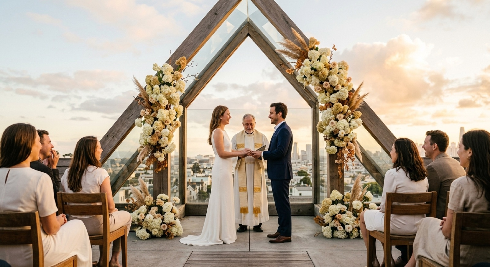
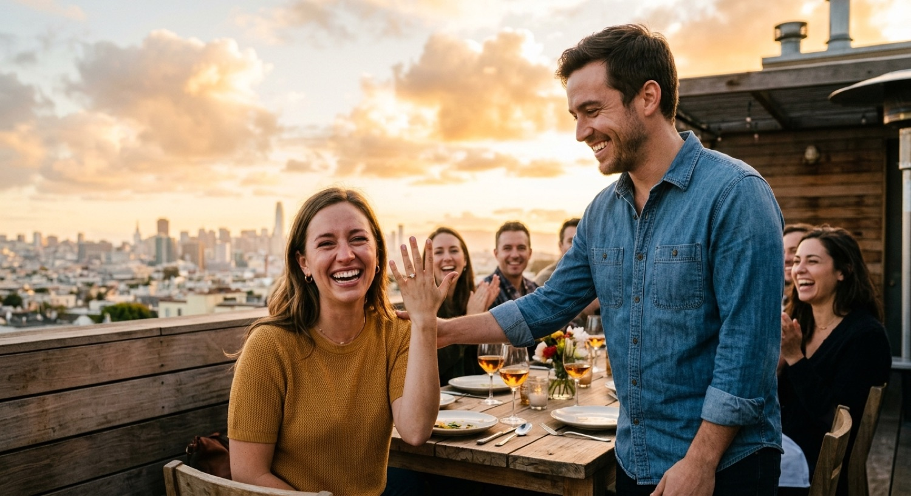

Boda · Experiencia de marca · 2026
María & Tomás
No querían “una boda más”. Querían que todo —del save the date al recuerdo final— se sintiera como una sola marca, y que sus invitados fueran parte de capturar la noche.


Una marca para su día
Creamos un monograma M&T, una paleta y una tipografía que viven igual en la papelería, la señalética del salón y lo digital. Un solo mundo visual, coherente en cada punto de contacto.

El hogar del evento
Un sitio con la historia de la pareja, los detalles del evento, RSVP, ubicaciones y dress code. La primera parada de cada invitado.
Se abre con un toque
Una invitación diseñada en HTML para celular — se abre con un link, cinematográfica, con toda la info y el RSVP integrado. Sin apps, sin PDF: premium desde el primer toque.
Ver invitación
La fiesta, contada por sus invitados
Un QR en cada mesa. Los invitados escanean, toman o suben fotos que van directo al Drive de los novios. Un display en vivo proyecta las fotos entrando en tiempo real en una tele durante la fiesta. Al final, todo el álbum queda para descargar y archivar.
Ver la app / display en vivoUna boda que se sintió como una marca de principio a fin — y un archivo vivo de la celebración, construido por sus propios invitados.
¿Quieres una boda así?
Diseñamos la experiencia completa — marca, sitio, invitación y la app de fotos. Cuéntanos tu fecha.
Escríbenos por WhatsApp →